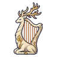
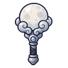

ผู้เฝ้าพื้นแก้ว
มอนธาตุศักดิ์สิทธิ์ Lv 98–99
เจอที่
| แมพ | โซน | Lv | ภูมิภาค |
|---|---|---|---|
| หลุมดาว ชั้น 1 · พื้นแก้ว | 98–99 | ที่ราบสูง | |
| หลุมดาว ชั้น 2 · ใจกลางดาว | 99–99 | ที่ราบสูง | |
| หอรากมืด (Dark Root) | รากกินดาว | 71–80 |
ค่าสถานะตามเลเวล
| Lv | HP | ATK | DEF | MDEF | EXP | Job |
|---|---|---|---|---|---|---|
| 98 | 77,325 | 222–332 | 43 | 18 | 155 | 116 |
| 99 | 79,406 | 226–338 | 44 | 18 | 157 | 118 |
ตีด้วยธาตุไหนดี
แรงขึ้น: มืด ×1.25
เบาลง: น้ำ ×0.75 ดิน ×0.75 ไฟ ×0.75 ลม ×0.75 พิษ ×0.75 วิญญาณ ×0.75 ศักดิ์สิทธิ์ ×0
วัตถุดิบที่ดรอป
| ของ | โอกาส | |
|---|---|---|
| แก้วดาวดำ | 66% | 1 ชิ้น (15% ได้ 2) |
อุปกรณ์ที่ดรอป (9)
| ของ | โอกาส |
|---|---|
| 0.25% | |
| เกราะดาราจักร (เกราะอก) | 0.15% |
| เกราะดาราจักร (สนับขา + รองเท้าเกราะ) | 0.15% |
| 0.12% | |
| 0.06% | |
 เครื่องดนตรีกวางขาว | 0.06% |
| 0.06% | |
 ออร์บจันทร์เพ็ญ | 0.06% |
| เกราะดาราจักร (ลูกแก้วดาราจักร) | 0.05% |
สกิล
หนามสะท้อน (Lv 25+) · หนามสะท้อน (Lv 60+) · ทุบพื้น (Lv 60+)